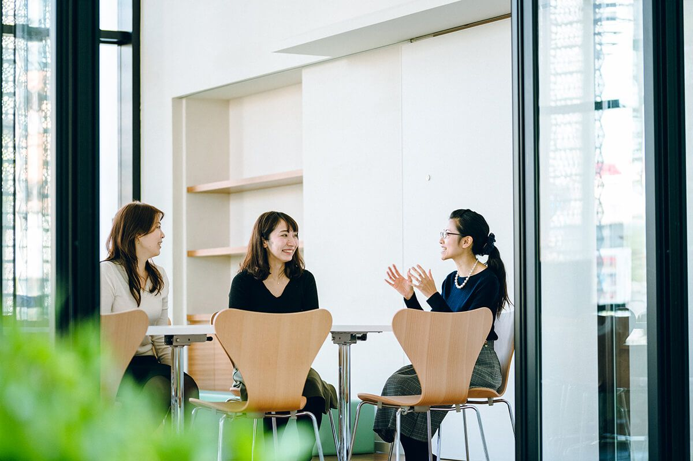

01事業内容
就活イベントの運営
説明を「聞くだけ」の場ではなく、実践と対話を通じて、学生と企業が互いの本音に触れられる場をつくる。 グループディスカッションを軸にした就活イベントを、企画から当日運営まで一貫して手がけています。
ミスマッチのない出会いを、
設計する。
従来の就活イベントでは、企業から学生への一方的な情報提供になりやすく、 互いのことを深く知らないまま選考へ進んでしまうことが少なくありません。
私たちは、学生と企業が同じ場で互いのニーズを把握し、理解を深められる設計を大切にしています。 学生にとっては、自分の就活に本当に役立つ経験や情報が得られること。企業にとっては、自社に合う学生と出会えること。 双方にとって納得感のある機会をつくることを、この事業の中心に置いています。

企画設計
学生と企業の双方にとって意味のある時間になるよう、イベント全体の構成を設計。一方的な説明の場ではなく、相互理解が深まる場になることを重視し、内容や導線を組み立てています。
学生集客・事前接点
SNSでの発信に加え、就活面談なども通じて学生との接点をつくり、イベントの趣旨や価値がきちんと伝わる形で集客。単に人数を集めるのではなく、参加する学生にとっても意義のある場になることを意識しています。
企業対応・当日運営
企業との事前調整から当日の進行管理まで、一貫して対応。学生と企業の双方が安心して参加できるよう、進行、交流、接点設計まで丁寧に運営しています。
イベント後のフォロー
イベントで終わらせず、その後の接点づくりやフォローにも取り組んでいます。学生への後追いや企業との連携を通じて、イベント後のつながりが自然に生まれるよう支援します。
グループディスカッション
学生が実践的に力を試せる場であると同時に、企業が学生の思考力や対人面を見極める機会にもなります。
企業説明
学生の関心をふまえた上で行う企業説明。一方的な紹介ではなく、双方の理解が深まる時間として設計しています。
交流会
表面的ではない、率直な対話が生まれるよう場づくりを工夫。企業・学生双方にとって納得感のある接点を目指します。
日常の学生接点が、
イベントの質をつくる。
この事業は、単発のイベント運営ではなく、日頃から築いている学生接点の上に成り立っています。 就活SNSの運用、継続的な就活面談、関西の学生ネットワーク、そして学生インターン組織による運営体制を土台に、 学生のリアルなニーズを把握し、イベント設計へ反映しています。
学生との距離が近いからこそ見える「今、学生が求めていること」と、企業が採用活動の中で本当に知りたいこと。 その両方を踏まえながら、場づくりを行っています。
- 就活イベントの主催・企画・運営 0回
- 参加者アンケートに基づく満足度(参考値) 0%
- 参加学生の中心層 関西の主要大学の学生
※ 2026年時点・自社集計
就活イベントを、企業説明の場ではなく、
互いをきちんと知るための機会に。
出展・共催のご相談から、学生集客のみのご相談まで、目的に合わせてご提案します。